June 2019 (version 1.36)
Update 1.36.1: The update addresses these issues.
Downloads: Windows: User System | Mac: Intel | Linux: deb rpm tarball snap
Welcome to the June 2019 release of Visual Studio Code. There are a number of updates in this version that we hope you will like, some of the key highlights include:
- Hide/show status bar items - Only display your preferred status bar items.
- Indent guides in explorers - Clearly highlights your project's folder structure.
- Better terminal shell selector - Easily select the default shell to use in the Integrated Terminal.
- Sequential task execution - Control the order of task and subtask execution.
- Jump to cursor debugging - Skip code execution as you jump to a new location.
- Disable debug console word wrap - Lets you keep debugging output to one line.
- JavaScript/TypeScript nightly builds - New extension integrates JS/TS nightly builds.
- New Java installer - Installs VS Code, the Java extension pack, and required Java dependencies.
- Remote Development (Preview) improvements - Save to local file system, drag and drop files to remotes, and more.
If you'd like to read these release notes online, go to Updates on code.visualstudio.com.
Insiders: Want to see new features as soon as possible? You can download the nightly Insiders build and try the latest updates as soon as they are available. And for the latest Visual Studio Code news, updates, and content, follow us on Twitter @code!
Workbench
Hide individual status bar items
There is now a context menu for the status bar to hide and show individual entries.
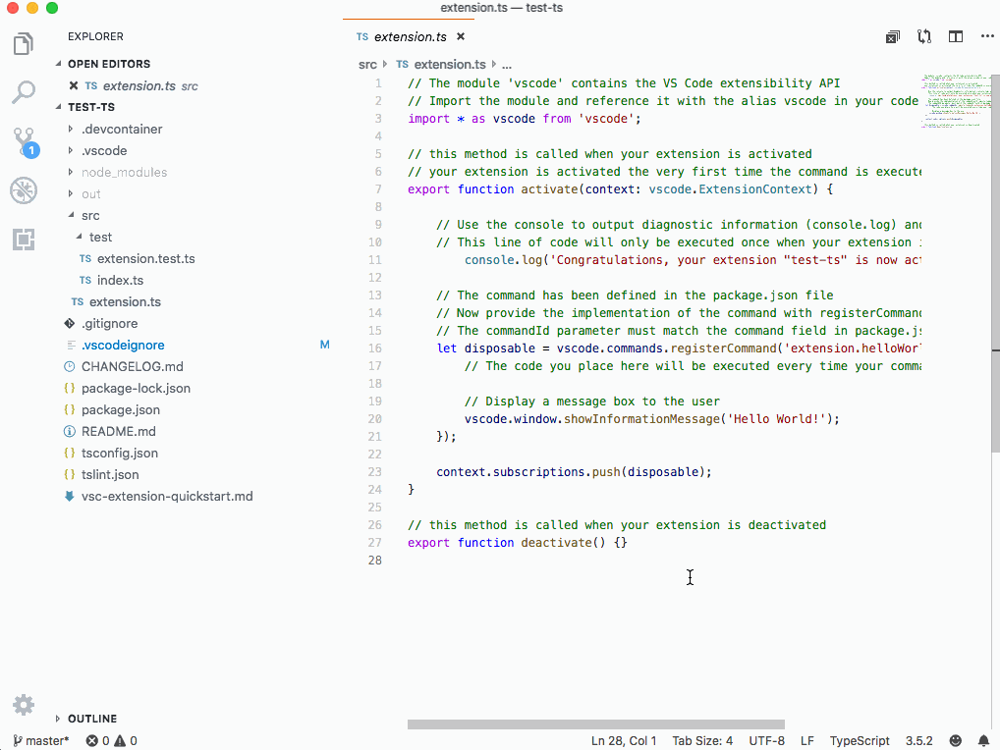
The configuration is persisted globally across all workspaces.
Note: The setting workbench.statusBar.feedback.visible was removed in favor of this new approach. You can hide the feedback smiley using the status bar context menu.
Tree indent guides
The tree widget now supports indent guides. This means indent guides are now available in the File Explorer, Search view, Debug views, etc.
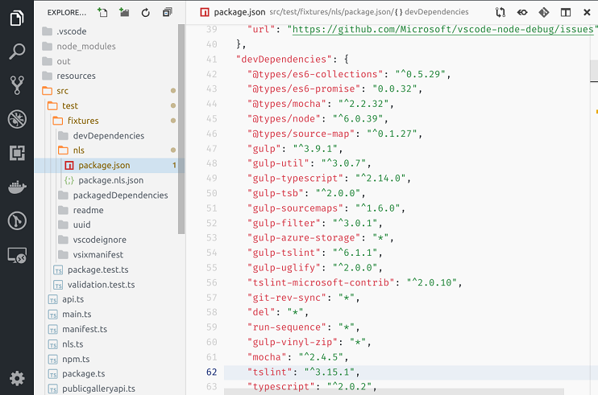
As before, you can control the tree's indentation level using the workbench.tree.indent setting and now you can also control how indent guides behave with the workbench.tree.renderIndentGuides setting.
The possible values for workbench.tree.renderIndentGuides are:
onHover- Show indent guide lines when hovering on a tree. The default behavior.always- Always show indent guide lines in a tree.none- Don't show indent guides.
Drag and drop a folder to copy
It is now possible to drag and drop a folder from outside VS Code into the File Explorer to copy it. Previously, when dropping a folder into the VS Code Explorer, we would always open a workspace containing that folder. Now it is possible to just copy the folder content.
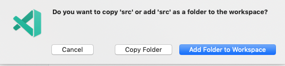
Copy paste filename incrementor change
When copy pasting files and folders that are duplicates inside the VS Code Explorer, VS Code increments the name of the pasted file. The way we were doing the incremental naming sometimes led to unexpected results.
To try to simplify naming, we now increment the filename the following way:
"hello.txt" -> "hello copy.txt" -> "hello copy 2.txt" -> "hello copy 3.txt"
Disable Alt key focus of the custom menu bar
Many users have asked to disable the behavior of focusing the custom menu bar when the Alt-key is pressed. To prevent this behavior, set the new setting, window.customMenuBarAltFocus, to false.
Minimap search decorations
When searching within a file, the resulting matches will now be highlighted both within the file and in the minimap:
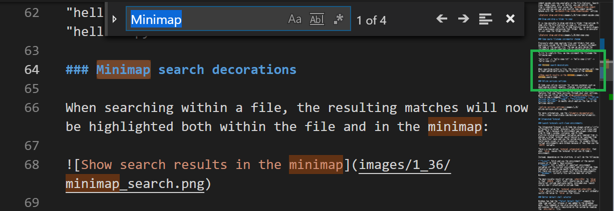
Updated warning colors
We've updated list.warningForeground and editorWarning.foreground to better match the rest of the editor warning colors. You'll see this updated color in the File Explorer, Peek error view, and editor squiggles:
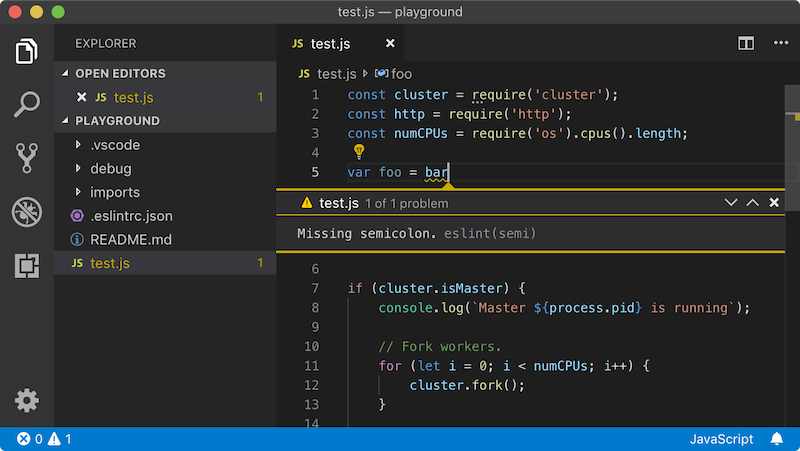
We also updated editorOverviewRuler.findMatchForeground to better stand out with the updated warning colors in the ruler:
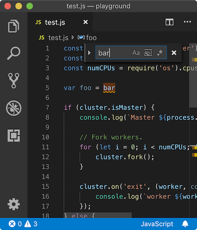
Online services settings
VS Code uses online services for various purposes such as downloading product updates, finding, installing and updating extensions, or providing Natural Language Search within the Settings editor. You can choose to turn on/off features that use these services through your user settings, which you can filter with the tag @tag:usesOnlineServices. There is now a command File > Preferences > Online Services Settings (Code > Preferences > Online Services Settings on macOS) which applies the tag in the Settings editor.
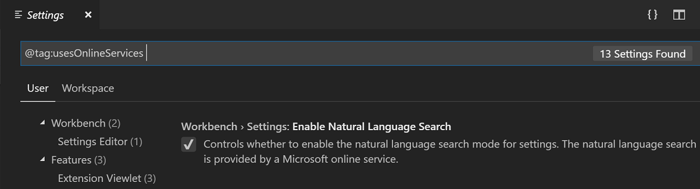
For more information, see our telemetry documentation.
Integrated Terminal
Better default shell selector
Windows has had the Select Default Shell command for some time and last release it was added to the Integrated Terminal dropdown menu. This command is now also available on macOS and Linux and exposes the shells registered on the system by reading the /etc/shells file.
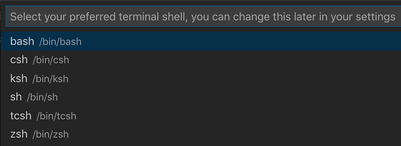
Launch terminals with clean environments
The Integrated Terminal in VS Code has always acted a little differently to normal terminals, particularly on Linux and macOS. The reason is that the environment was always inherited from VS Code's window (instance) and VS Code/Electron-related environment variables were removed, whereas a normal terminal would typically be launched from the Dock/Start menu and use the system environment. This could cause issues in certain scenarios, for example Python virtual environments were broken because of how they use the $PATH variable.
There's a new preview option, terminal.integrated.inheritEnv, that when false causes the terminal to not use VS Code's environment.
Instead, depending on the platform, it will do the following:
- Linux: Fetch and use the environment of the parent process of VS Code's "main process".
- macOS: Pull a handful of important environment variables off the current environment and only include them. Eventually we would like macOS to behave the same as Linux but there are currently issues with fetching environments.
- Windows: Currently this setting does not affect Windows.
The main visible result of setting inheritEnv to false is that $SHLVL (shell level) should now be 1 and $PATH should not include duplicate paths, provided your launch scripts don't intentionally include them.
The default value for terminal.integrated.inheritEnv is true, which is the previous behavior, but we will probably switch the value to false in the future.
Change to Ctrl+\
Previously, Ctrl+\ was mapped to the command to split the terminal on Linux and Windows but this has been changed to pass SIGQUIT through to the shell, as most people would expect a terminal to do. If you want the old behavior, you can add this keyboard shortcut to your keybindings.json file.
{
"key": "ctrl+\\",
"command": "workbench.action.terminal.split",
"when": "terminalFocus"
}
Tasks
Sequential dependency execution
The dependsOn task attribute still defaults to running all dependencies in parallel, but now you can specify "dependsOrder": "sequence" and have your task dependencies executed in the order they are listed in dependsOn. Any background/watch tasks used in dependsOn must have a problem matcher that tracks when they are "done".
The example task below runs task Two, task Three, and then task One.
{
"label": "One",
"type": "shell",
"command": "echo Hello ",
"dependsOrder": "sequence",
"dependsOn": ["Two", "Three"]
}
Problem matcher path detection
When task output is scanned for problems, information about the path is provided using the fileLocation problem matcher attribute. In addition to the existing relative and absolute options, you can now specify autoDetect. When using autoDetect, the task system will automatically try to determine whether the paths in the problems are relative or absolute.
Languages
TypeScript 3.5.2
This release includes TypeScript 3.5.2, a small update that fixes a few important bugs.
Use syntax only feature of JavaScript and TypeScript more quickly
VS Code's JavaScript and TypeScript language features is powered by a TypeScript server. This server powers complex features such as IntelliSense and error reporting, along with simpler features such as code folding and document outlines.
Features such as IntelliSense require that the TypeScript server evaluate the entire JavaScript or TypeScript project before it can return any results, and this can take time for larger projects. While this processing is happening, the server is not able to handle any other requests, including requests for simple features like code folding that only require a basic semantic understanding of the current file. You may have seen this issue if you've ever noticed a delay before code folding or the document outline become available.
In order to let you start working with your code faster, we've added a new experimental option whereby VS Code uses two TypeScript servers: one that only handles simple syntax-based operations, and a complete one that handles project processing, IntelliSense, error reporting, and other advanced language features. To enable this behavior, set "typescript.experimental.useSeparateSyntaxServer": true. This setting requires using TypeScript 3.4 or newer in your workspace.
Debugging
Jump to cursor
We have added a new debug command Jump to Cursor, which lets you move program execution to a new location without executing any of the code in between. If Jump to Cursor is supported by a debugger, the new command appears in the editor context menu and Command Palette while debugging. Currently this command is only available from the C# extension, but other debug extensions should follow soon.
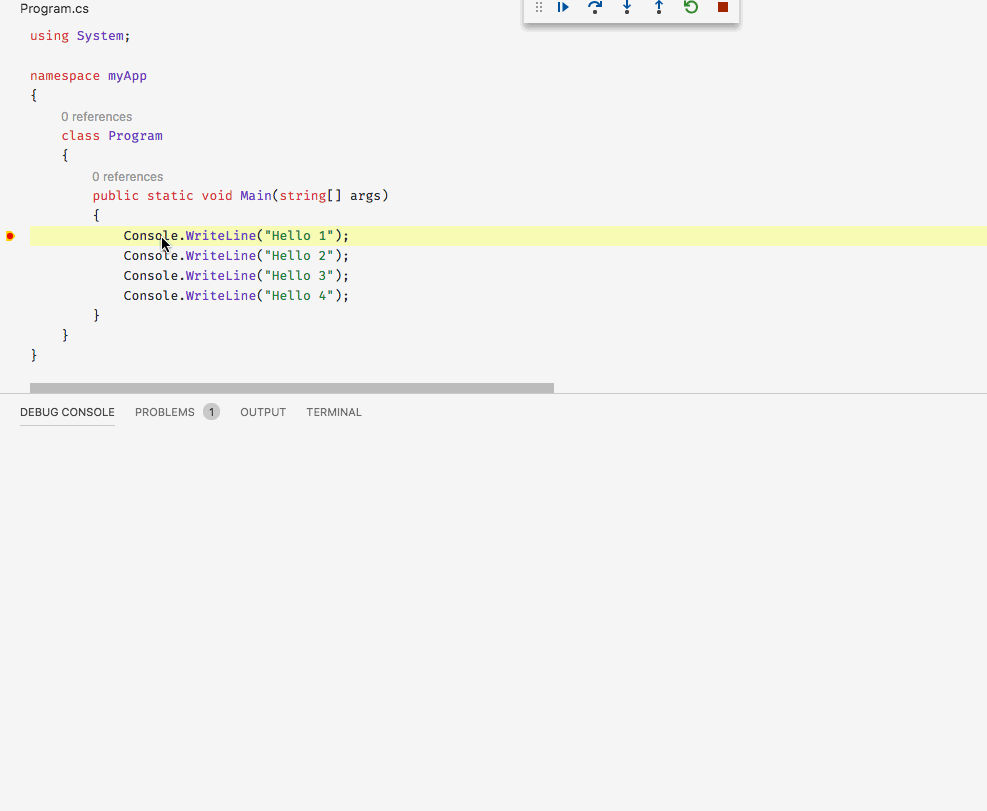
Disable console word wrap
A new setting, debug.console.wordWrap, controls whether word wrap is enabled in the Debug Console. By default, all lines are wrapped. If the setting is turned off, the lines will no longer break in the Debug Console and there is a horizontal scrollbar.
Node.js debug configuration attribute useWSL is deprecated
With the WSL extension, universal Windows Subsystem for Linux (WSL) support has arrived in VS Code. Now all extensions can be used in WSL in a seamless way.
Consequently, we are planning to remove the now obsolete WSL support we added to VS Code's Node.js debugger two years ago. As a first step toward this goal, we are deprecating the useWSL debug configuration attribute. Starting with this milestone, the attribute will show up with a squiggly when opening a launch.json file in the editor. In addition, a notification appears when a debug session is launched that contains a useWSL.
Here are the steps for migrating an existing project that uses the useWSL flag to debugging with the WSL extension:
- Make sure that you have the WSL extension installed.
- Open the folder of your project in VS Code.
- Reopen the project in WSL by using the WSL: Reopen Folder in WSL command.
- Press F5.
- Remove the
useWSLflag from the debug configuration.
For more information, see our Developing in WSL documentation.
Contributions to extensions
JavaScript and TypeScript nightly extension
The new JavaScript and TypeScript nightly extension uses the nightly build of TypeScript (typescript@next) for VS Code's built-in TypeScript version, which powers JavaScript and TypeScript IntelliSense. This makes it easy to test the latest TypeScript features and provide feedback about them!
TSLint 1.2
We've published a new version of the TSLint extension that fixes a few important bugs. This release also adds a warning indicator to the VS Code status bar if there is a tslint.json file in a workspace but TSLint itself is not properly installed.
Installer for Java developers
There is a new Visual Studio Code Installer for Java to help first-time developers set up their Java environment. When you run the Java Pack Installer, it automatically detects whether the JDK (Java Development Kit), Visual Studio Code, and required extensions are already installed. If not, the installer can download and configure the missing dependencies for you. You can also use the installer to add the Java-related components to your existing Visual Studio Code installation.
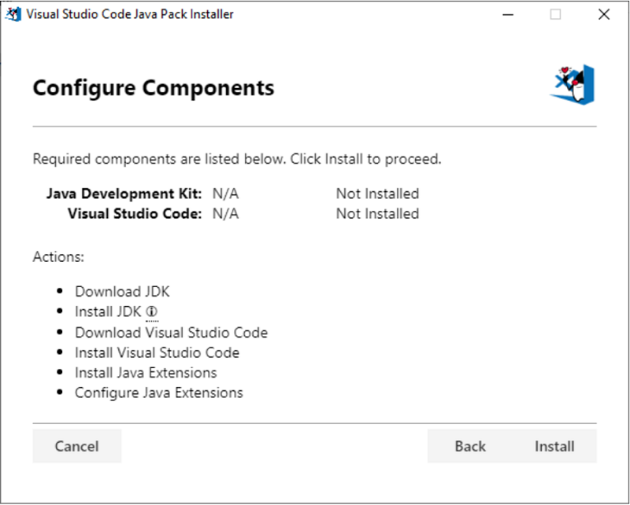
With the Java extensions installed, Visual Studio Code provides comprehensive Java development features such as smart code completion, refactoring, debugging, and testing as well as project management and application server integration.
Remote Development (Preview)
Work has continued on the Remote Development extensions, which allow you to use a container, remote machine, or the Windows Subsystem for Linux (WSL) as a full-featured development environment. You can learn about new extension features and bug fixes in the Remote Development release notes.
And to learn more about developing Linux applications on Windows, see this Linux development with WSL and Visual Studio Code Remote blog post from the Windows Developer Platform team.
Debugger for Chrome as remote UI extension
If you are working on a web project in a remote window, you can use the Debugger for Chrome extension to debug it in a local Chrome window. Just install the extension, start your dev server on the remote, forward the server's port, and start your launch configuration. See the extension README for details.
Extension authoring
Splitting vscode package into @types/vscode and vscode-test
During the event-stream incident last year, we found that the vscode package was affected as its 223 transitive dependencies included event-stream. These dependencies also cause GitHub security alerts from time to time for many VS Code extensions. To address dependency complexity, we started slimming down the vscode package.
The vscode package had served two purposes:
- Pull down
vscode.d.tsfor extension development. - Run integration tests by downloading and launching a local copy of VS Code.
Now we are splitting vscode into @types/vscode and vscode-test, two packages with more focused functionality.
@types/vscodecontainsvscode.d.tsfor each release. For example,npm i @types/vscode@1.34.0installs the VS Code 1.34 Extension API. Unlikevscode, which pulls downvscode.d.tsthrough apostinstallscript, this package can be fully cached by package managers.vscode-testprovides a set of APIs to run integration tests with VS Code. The oldvscodepackage will continue to work, but new features will only go tovscode-test. We suggest that you switch over tovscode-test, which features a slimmer dependency graph and a more flexible, explicitly documented API. You can learn more about usingvscode-testin the Testing Extensions article.
Additionally:
vscode-dtsallows you to quickly download any version of the VS Code API via CLI.vscenow checks@types/vscodeversion againstengines.vscodeto prevent you from using a new API incompatible with older versions of VS Code.- The
helloworld-test-sample, Testing Extensions page, and Continuous Integration page are updated to usevscode-test. - The Testing Extensions page contains a migration guide to help you transition from
vscodeto@types/vscodeandvscode-test. - All VS Code sample extensions now use
@types/vscode. - The VS Code extension generator scaffolds extensions using the
@types/vscodeandvscode-testpackages.
Node.js update
The Electron version that VS Code runs on has been updated and brings with it an update to Node.js from 10.2.0 to 10.11.0. All extensions will now run on this newer version of Node.js.
APIs for remote
There is a new property vscode.env.remoteName that is defined whenever a remote extension host runs. Its value is defined by the extension bootstrapping the remote extension host and the value is available on the local and remote extension hosts.
Extensions that need to know whether they run on the remote or local extension host can use Extension#extensionKind, which is either ExtensionKind.UI or ExtensionKind.Workspace. The value represents what's defined in the extension's package.json file or overridden by the user. When no remote extension host exists, the value is always ExtensionKind.UI.
DocumentLink.tooltip
The new DocumentLink.tooltip property allows a DocumentLinkProvider to customize the text displayed when a user hovers over a document link:
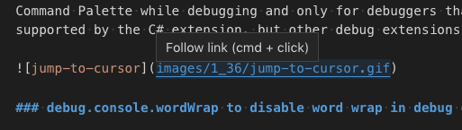
VS Code includes instructions on how to activate the link (cmd + click in the example above) along with the tooltip text.
Port forwarding and port mapping now support '127.0.0.1' in addition to 'localhost'
The vscode.env.openExternal API opens an URI using the default external application. When openExternal is called by a remote extension on a local URI, such as http://localhost:8080, VS Code automatically opens a tunnel that connects a port on the local machine to the opened port on the remote machine. This automatic tunneling previously was only enabled for 'localhost' URIs but it is now enabled for '127.0.0.1' as well.
Additionally, the webview port mapping API now handles '127.0.0.1' in addition to 'localhost' URIs.
More properties marked as readonly or ReadonlyArray
More properties in the VS Code API are now marked as readonly in vscode.d.ts to better express their intent to extensions.
Notable changes include:
- All fields on event interfaces are now readonly. Event objects should never be mutated as the same object can be dispatched to multiple listeners.
- The methods on
DiagnosticCollectionnow take readonly arrays. This change was made because you can only update aDiagnosticCollectionthrough its methods, not by mutating an array previously passed to it. Extensions.allis now a readonly array since it cannot be mutated.TextEditor.insertSnippetnow takes readonly arrays since it does not mutate its parameters.
These new readonly modifiers may cause compile errors for extension code that explicitly typed out the non-readonly types that the VS Code API was previously using:
vscode.window.onDidChangeTextEditorSelection(e => {
// Error: `e.selections` is now a readonly array but
// our `updateForSelections` function takes a mutable array
updateForSelections(e.selections);
});
function updateForSelections(selections: vscode.Selection[]) {
...
}
To fix this, propagate the readonly modifier through your extension's source code as well:
vscode.window.onDidChangeTextEditorSelection(e => {
updateForSelections(e.selections);
});
function updateForSelections(selections: readonly vscode.Selection[]) {
...
}
TerminalOptions.hideFromUser
The runInBackground terminal hideFromUser option is now in the stable API. Use this option to completely hide a terminal from the user until Terminal.show() is called:
const term = window.createTerminal({ hideFromUser: true });
term.sendText('do something');
Combined with the sendText and onDidWriteData APIs, it's possible for an extension to interact with an interactive terminal, for example, to set up a connection, and only call Terminal.show() if something goes wrong.
Comment reactions
The Comments API now supports displaying and managing user reactions on comments. When Comment.reactions is present, reactions will be rendered under the comment body.
If an extension registers a reaction handler with CommentController.reactionHandler, users will be able to respond to the existing reactions or use the reactions picker to create a new reaction.
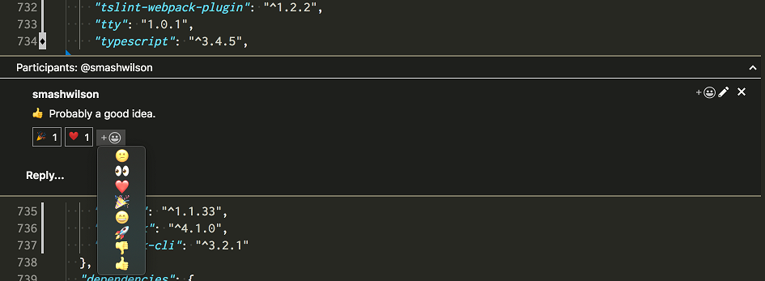
Proposed extension APIs
Every milestone comes with new proposed APIs and extension authors can try them out. As always we are keen on your feedback. This is what you have to do to try out a proposed API:
- You must use Insiders because proposed APIs change frequently.
- You must have this line in the
package.jsonfile of your extension:"enableProposedApi": true. - Copy the latest version of the vscode.proposed.d.ts file into your project.
Note that you cannot publish an extension that uses a proposed API. We may likely make breaking changes in the next release and we never want to break existing extensions.
vscode.workspace.fs
There is proposed API to allow extensions to interact with file system providers. The API lets extensions create, read, write, and delete files and folders from arbitrary file systems. For example, a language extension can now load source files that are provided from an ftp-server or another remote source.
The API is accessed via a new property on the workspace-object: vscode.workspace.fs. Give it a try and feel free to leave feedback on issue #48034.
Updated API for code insets
We have refactored and simplified the code insets proposal. Instead of using the provider-pattern, it is now more like the text decorations API.
export function createWebviewTextEditorInset(
editor: TextEditor,
line: number,
height: number,
options?: WebviewOptions
): WebviewEditorInset;
Given an editor, a line, and a height, you can create insets. Insets then use the Webview that's already known from the WebviewPanel. As with decorations, insets are being disposed once their containing editor closes.
Webview.resourceRoot
The proposed resourceRoot constant on webviews exposes the root from which local resources are loaded in webviews.
const panel = vscode.window.createWebviewPanel(
CatCodingPanel.viewType,
'Cat Coding',
vscode.ViewColumn.One,
{
// Restrict the webview to only loading local content from our extension's `media` directory.
localResourceRoots: [vscode.Uri.file(path.join(extensionPath, 'media'))]
}
);
const resourceRoot = await panel.resourceRoot;
panel.html = `<!DOCTYPE html>
<html lang="en">
<head>
<meta charset="UTF-8">
<meta http-equiv="Content-Security-Policy" content="default-src 'none'; img-src ${resourceRoot} https:;">
<meta name="viewport" content="width=device-width, initial-scale=1.0">
<title>Cat Coding</title>
</head>
<body>
<img src="${resourceRoot}/${path.join(extensionPath, 'media')}/cat.gif" width="300" />
</body>
</html>`;
When VS Code is run on the desktop, resourceRoot will be vscode-resource:. However, the value may be different when VS Code is run in other environments, such a browser.
API to get the default shell
Since the terminal.integrated.shell.<platform> settings now default to null, extensions can no longer use that setting to detect the default shell. There is now a proposed API vscode.env.shell that will return the default shell for the terminal:
const shell = vscode.env.shell;
if (shell.search(/(powershell|pwsh)/i) !== -1) {
// Do something special that PowerShell needs
}
Language Server Protocol
A new version of the Language Server Index Format tools for TypeScript have been implemented. The new versions have an improved format for easier importing of large dumps into databases without making it database specific. See the instructions in the lsif-node repository for details on running these tools.
Engineering
Electron 4.0 update and Electron 6.0 exploration
In this milestone, we finished the exploration of bundling Electron 4 into VS Code, making it the first time this Electron version ships with stable. This is a major Electron release and comes with Chrome 69 and Node.js 10.11.0 (a major leap forward from our current version with Chrome 66 and Node.js 10.2.0).
Unfortunately, we had to disable macOS simple fullscreen support ("window.nativeFullScreen": false) for one release due to issue #75054. We expect to include a fix to our Insiders build early next month.
We have started to explore updating to Electron 6, which we hope to push to Insiders soon.
Better code loading
Electron 4 gave us access to new script caching APIs. With the new caching APIs, cached data can be created without affecting the very first start-up and can be created repeatedly to cover lazily parsed functions. That and improvements in our loader resulted in ~15% faster code loading.
Linux 32-bit support ends
VS Code is using the Electron framework to run on multiple platforms. With this release, we move to Electron version 4.x, which means that VS Code will no longer run on Linux 32-bit. Please update to a 64-bit version of VS Code. All your settings and extensions will work as before, without the need to migrate anything. You can read the related blog post from Electron for more information.
iframe-based webview exploration
This iteration, we explored using normal iframes instead of Electron's <webview> tags to implement VS Code's webviews. This work is primarily being done to support running VS Code in the browser, but <webview> is also fairly complex and has caused issues for us in the past. Our hope is that we eventually will be able to replace our use of <webview> with normal iframes.
We've made significant progress on iframe-based webviews and can now successfully run many webviews from extensions in browsers, but there's still lots of work to be done. We will continue this exploration in July.
Notable fixes
- 41356: hotkey to move to next/previous error should not move NVDA's focus outside the editor
- 45515: Uri#parse can break path-component
- 54084: Do not change debug touchbar buttons position when stepping
- 70248: The cls command doesn't clear the terminal (Windows 10 1903, ConPTY)
- 74710: Image preview should only draw "transparent" checkered background for the size of the image
- 75359: Variables pane does not update after changing value via debug console
- 41085: Git: File events don't work if .git is outside the opened folder
Thank you
Last but certainly not least, a big Thank You! to the following folks that helped to make VS Code even better:
Contributions to vscode:
- Abby (@abbychau): Add an option to allow to open in new window after git initializing or cloning PR #69763
- Andrius (@andrius-pra): Sync languages provided by Typescript plugins PR #75371
- Aurélien Pupier (@apupier): Add License field to package.jsons #68423 PR #68771
- Jakub Čábera (@Ash258): shellscript: Add folding markers PR #75828
- Lee Houghton (@asztal): Handle multiple users with /tmp/vscode-typescript PR #75547
- Babak K. Shandiz (@babakks): Added
cachedScrollTopto SCM panel PR #74723 - Patrick Burke (@burknator): Makes status zoom button a IStatusbarEntry #74454 PR #75618
- Chase Adams (@chaseadamsio): Support theming of Quick Input / Quick Open PR #74041
- Christian Oliff (@coliff): Recommend users install EditorConfig extension PR #75391
- Hung-Wei Hung (@hwhung0111): Fix some typos in comment PR #75565
- Jean Pierre (@jeanp413)
- Jonas Kemper (@jk21): Package json info PR #72763
- @malingyan2017: Fix Recent list in dock does not show recent files/folders #74788 PR #75108
- Denis Stepanov (@meduzik): Empty arguments in launch commands are now properly escaped PR #25098
- Micah Smith (@Olovan): Fix for issue #35245 PR #75357
- @orange4glace
- Jesse Mazzella (@ozyx): remove trailing '/' from repo url for baseFolderName PR #75822
- Alasdair McLeay (@penx): Node module resolution for CSS import PR #70693
- Raul Piraces Alastuey (@piraces): Suppress MsgBox when Wizard is running in silent mode PR #76215
- Remco Haszing (@remcohaszing)
- Evgeny Zakharov (@risenforces): add window.disableMenuBarAltBehavior option PR #73258
- Samuel Bronson (@SamB): Fix typo: timemout -> timeout PR #75162
- TBK (@TBK): Add support for APKBUILD PR #75706
- Tomáš Chaloupka (@tchaloupka): Fix LANG env var for Czech PR #75519
- Tony Xia (@tony-xia)
- Waldir Pimenta (@waldyrious): Fix spelling of the example abbreviation (e.g.) PR #74785
Contributions to our issue tracking:
- John Murray (@gjsjohnmurray)
- Alexander (@usernamehw)
- Eric Amodio (@eamodio)
- Jean Pierre (@jeanp413)
- Danny Tuppeny (@DanTup)
Please see our Community Issue Tracking page, if you want to help us manage incoming issues.
Contributions to vscode-css-languageservice:
- Dmitry Parzhitsky (@parzh): Fix pseudo-element specificity PR #154
Contributions to vscode-html-languageservice:
- Liam Newman (@bitwiseman): Update js-beautify to 1.10.0 PR #61
- Javey (@Javey): Make it can be compressed by uglify-js PR #64
Contributions to language-server-protocol:
- Danny Tuppeny (@DanTup): Fix typo "must not sent" -> "must not send" PR #747
Contributions to debug-adapter-protocol:
- Joel Day (@joelday): Add Papyrus implementation PR #59
Contributions to vscode-azurecli:
- Matthew Burleigh (@mburleigh): Open results in new editor PR #55
- Matthew Burleigh (@mburleigh): Add status bar item to indicate progress PR #56
Contributions to vscode-vsce:
- @atsutton: Changed log level to info. PR #369
- James George (@jamesgeorge007)
- Jonathan Nagy (@nagytech): Allow commit message to be specified PR #365
Contributions to vscode-recipes:
- Mladen Mihajlović (@mika76): Vue - Updated readme with info gathered from issues PR #213
- Ephraim Khantsis (@doom777): update ng-test launch configuration PR #212
Contributions to localization:
There are over 800 Cloud + AI Localization community members using the Microsoft Localization Community Platform (MLCP), with over about 100 active contributors to Visual Studio Code. We appreciate your contributions, either by providing new translations, voting on translations, or suggesting process improvements.
Here is a snapshot of contributors. For details about the project including the contributor name list, visit the project site at https://aka.ms/vscodeloc.
- Bosnian: Ismar Bašanović, Ernad Husremovic.
- Bulgarian: Иван Иванов, Gheorghi Penkov.
- Czech: Tadeáš Cvrček, Michal Franc, Jan Kos, Radim Hampl.
- Danish: René Pape, Lars Vange Jørgensen, Martin Liversage, Lasse Stilvang, Anders Lund, Allan Kimmer Jensen, Anton Ariens.
- Dutch: Leroy Witteveen, Luc Sieben, Maxim Janssens, Damien van Gageldonk, Tom Meulemans.
- English (United Kingdom): Martin Littlecott, Alexander Ogilvie, Fabio Zuin, Mohit Nain, Sulkhan Ninidze, alshyab wa3ed, Tejas kale.
- Finnish: Lasse Leppänen, Petri Niinimäki, Sebastian de Mel.
- French: Antoine Griffard, Thierry DEMAN-BARCELÒ.
- German: Julian Pritzi, Patrick Burke, Ettore Atalan, Meghana Garise.
- Greek: Θοδωρής Τσιρπάνης, Charalampos Fanoulis, Vassilis Vouvonikos.
- Hebrew: חיים לבוב, Eyal Ellenbogen.
- Hindi: Sanyam Jain, Kishan K.
- Hungarian: Boldi Kemény.
- Chinese Simplified: 斌 项, paul cheung, 张锐, Yizhi Gu, Yiting Zhu, Justin Liu, Shi Liu, Pluwen, Joel Yang, Jieting Xu, Chen Yang, 涛 罗, 立飞 李, 雨齐 刘, cuibty wong, 建 周, XIANG ZUO.
- Chinese Traditional: LikKee 沥祺 Richie, Winnie Lin, Jeremy.
- Indonesian: Jakka Prihatna, Arif Fahmi, Septian Adi, Heston Sinuraya, Hendra Widjaja, Don Nisnoni, Eriawan Kusumawardhono, Bervianto Leo Pratama, Laurensius Dede Suhardiman, Rifani, rsyad, Christian Elbrianno.
- Italian: andrea falco, Aldo Donetti.
- Japanese: Michihito Kumamoto, Yoshihisa Ozaki, Aya Tokura, TENMYO Masakazu, 太郎 西岡.
- Korean: Hongju, 우현 조, Hoyeon Han, Hong Kwon.
- Latvian: Kaspars Bergs, Andris Vilde.
- Lithuanian: Andrius Svylas, Tautvydas Derzinskas, Karolis Kundrotas, Martynas J..
- Norwegian: Dag H. Baardsen, Ole Kristian Losvik.
- Polish: Rafał Całka, Marcin Weksznejder, Jakub Żmidziński, Rafał Wolak, Szymon Seliga, Grzegorz Miros.
- Portuguese (Brazil): Alessandro Trovato, Thiago Dupin Ugeda, Weslei A. de T. Marinho, Rafael Lima Teixeira, Gerardo Magela Machado da Silva, Marcos Albuquerque, Loiane Groner, Alessandro Fragnani, Judson Santiago, Andrei Bosco, Fábio Corrêa, Roberto Fonseca, Fabio Lux, Emmanuel Gomes Brandão, Guilherme Pais, Rodrigo Vieira, André Gama.
- Portuguese(Portugal): Nuno Carapito, Pedro Daniel, José Rodrigues, Diogo Barros.
- Romanian: Stefan Gabos.
- Russian: Дмитрий Кирьянов, Анатолий Калужин.
- Spanish: David Fernández Aldana, Ricardo Rubio, Thierry DEMAN, José María Aguilar.
- Swedish: Johan Spånberg, Notetur Nomen.
- Tamil: Merbin J Anselm, Jeyanthinath Muthuram, Boopesh Kumar, Nithun Harikrishnan, Vignesh Rajendran.
- Turkish: Meryem Aytek, Fıratcan Sucu, Ahmetcan Aksu, Mehmet Yönügül, Ömer Sert, Anıl MISIRLIOĞLU, Misir Jafarov, Bruh Moment.
- Ukrainian: Arthur Murauskas, Alexander Varchenko, Вадим Шашков, Евгений Коростылёв.
- Vietnamese: Van-Tien Hoang, Vuong Bui, Chủ Tất.